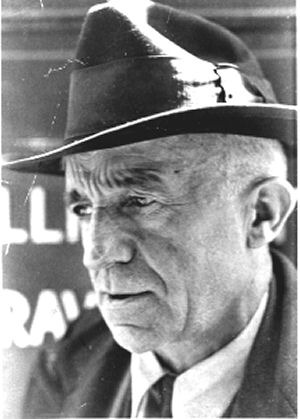

<TABLE CELLSPACING="2" CELLPADDING="5" BORDER="0">
<TR>
    <TD WIDTH="60%" VALIGN="top">
	 
<P><EM>"The future will be different if we make the present different."</EM> - Peter Maurin</P>
<P>This section is devoted to the life and thought of Peter Maurin who co-founded The Catholic Worker Movement with Dorothy Day in 1933.</P>
<DIV ALIGN="center"><A HREF="DDonPM.cfm"><STRONG>Dorothy Day on Peter Maurin</STRONG></A></DIV>

	 </TD>
	 
	 
    <TD WIDTH="40%" VALIGN="top" BGCOLOR="#C0C0C0">
	 <P><DIV ALIGN="center"><STRONG>Peter's Program</STRONG></DIV></P>
	 <OL>
	<LI>Roundtable discussions for the clarification of thought
	<LI>Houses of hospitality to practice the works of mercy
	<LI>Farming communues
</OL>
	 </TD>
</TR>
</TABLE>


